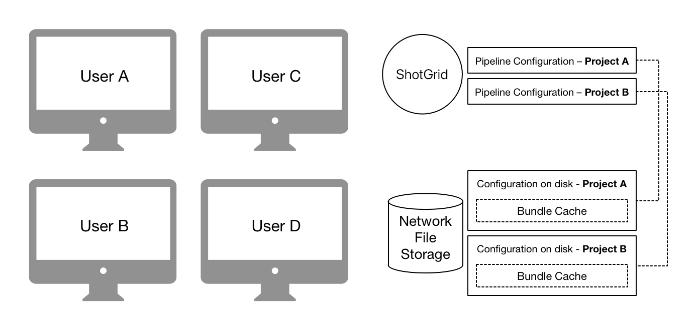
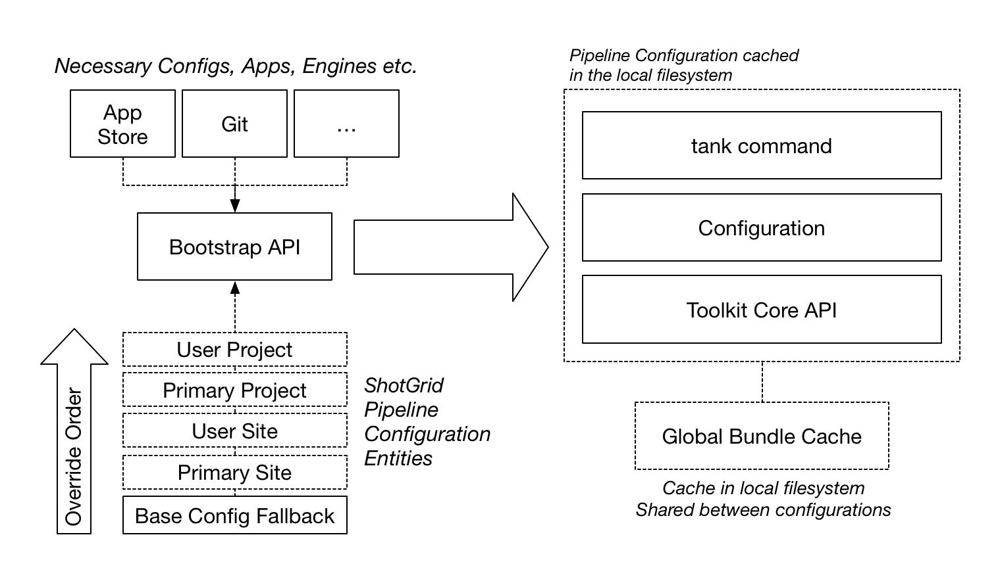

Initialization and startup¶
This section outlines how Toolkit starts up and initializes. It explains the common patterns around startup, configuration management and the various APIs and workflows related to this process.
Introduction¶
Toolkit is controlled using Pipeline Configuration Entities. Each Project in Shotgun can have one or more of these entities associated. The Shotgun entity either contains Toolkit configuration settings directly, or points to a location where these can be downloaded from.
When Toolkit starts up, it ensures that these configuration settings exists on disk, alongside with all other necessary pieces required for Toolkit to operate. This collection of files is referred to as a Pipeline Configuration.

The Pipeline Configuration on disk contains the following items:
- Configuration files - all the the details that define the configuration: app and engine settings, naming convention and file system templates.
- An installed version of the Toolkit Core API as required by the configuration.
- A
tankcommand which gives access to admin and maintenance commands to make it easy to upgrade and configure the configuration. It also gives access to the shell engine environment. - A so called bundle cache, contained inside an
installfolder, containing downloaded apps, frameworks and engines defined by the configuration. This cache is downloaded from locations such as the Shotgun App Store, git or from your Shotgun site, all handled by Toolkit’s Descriptor system.
By default, each pipeline configuration in Toolkit has its own independent API and configuration, making it easy to customize different projects independently and evolve the pipeline over time without breaking older projects. However, it is possible to arrange your configuration in several different other ways, all explained below.
In Shotgun, the main Pipeline Configuration Entity for a project is always named Primary.
In addition to this, additional pipeline configurations entities can
be set up. Typically, these are used as test areas or developer sandboxes, where you
want to run with special configuration settings. These developer sandboxes can be associated
with certain users to make it easy to run development and testing
in parallel with production.
Note
To read more about the default configurations offered with Toolkit, see the Shotgun integrations admin guide.
The Toolkit startup¶
In order to understand how the Toolkit startup APIs operate, let’s begin by taking a look at how the default Toolkit configuration operates at a high level:

This design is repeated everywhere and is a pattern which can be easily extended. Users typically launch Toolkit by launching the Shotgun Desktop. The Shotgun Desktop contains a Toolkit plugin which runs the Bootstrap API in order to load in a full Toolkit environment.
Note
A Toolkit plugin is a lightweight piece of startup code which imports the Toolkit core and launches the bootstrap API. Most content creation software have a concept of a plugin or extension system. Each Toolkit engine (Maya, Nuke, Houdini, etc) implements a plugin suitable for that software environment.
Once the plugin is loaded, and the bootstrap is running, it will start by prompting the user to log in
to a site. Next, it will connect to the Shotgun Site to determine if any Pipeline Configuration Entities
exist associated with the project. If so, these are used to configure the Toolkit session.
If not, the default plugins running in Shotgun Desktop will fall back on looking for the
latest release of the tk-config-basic configuration in the Shotgun App Store.
The bootstrap API will make the necessary preparations and then launch a Toolkit Engine, as well as the apps defined in the configuration.

In the figure above, note the Launch App which is designed to launch other software. This app makes use of a centralized Software Launch API. The launch app will use this API to determine the available installations of a software, launch it, and ensure that upon launch, the Toolkit plugin associated with that software is launched at startup.
Note
This pattern is very flexible and Toolkit plugins can be crafted in many different ways, to be auto updating or come with a fixed bundled configuration for offline use, to be distributed with an engine or be completely stand alone. Similarly, the bootstrap API is merely a mechanism that allows a user to load a pipeline configuration and launch an engine and can be utilized in many different scenarios, not just contained inside a plugin. Examples include render farm launch scripts, integration with software management systems such as Rez, general utilities, etc.
There are two fundamentally different ways to set up a Toolkit Project in Shotgun, both briefly outlined below:
Distributed configurations¶
Distributed configurations are defined as Pipeline Configurations inside Shotgun. At startup, these are detected by the Bootstrap API which will automatically manage your local configuration and resources on disk, ensuring that you have all the right apps, engines and other dependencies needed to run the configuration. This is a decentralized workflow where each user will automatically caches all necessary runtime components locally.

Note
To create a distributed configuration, manually go into Shotgun and create a Shotgun Pipeline Configuration entity for your project. For more information, see Managing distributed configurations.
Centralized configurations¶
Centralized configurations are installed into a specific disk location, usually on a shared storage, and accessed by all users. All users who want to access to the configuration need to be able to access its shared location on disk.
{kind=link}
These configurations are created using Toolkit’s project setup system (either the Shotgun Desktop project
setup wizard or the tank setup_project command). After project setup, the configuration is manually
managed, typically via the tank command.
Uploading a configuration to Shotgun¶
The simplest way to distribute a Toolkit configuration to a group of users, whether these are distributed in different locations or all working in the same building, is to upload it to Shotgun. At startup, the Toolkit Bootstrap will automatically look for uploaded configurations and if detected, download the configuration locally and then launch. Toolkit will take care of distribution and setup.
To use this workflow, simply zip up your configuration and upload it as an attachment:

Note
For backwards compatibility, configurations uploaded to the custom sg_uploaded_config field
are also supported.
Older versions of Shotgun may not have an Uploaded Config field enabled by
default, and in this case it may be necessary to create a custom field. Naming it Uploaded Config
will generate a field with the API name sg_uploaded_config and thus will be recognized by Toolkit.
Once a configuration is uploaded, it will be detected and used at bootstrap. If a new configuration is uploaded to Shotgun, users will pick it up the next time they start up.
Note
As an example, you can download one of the default configurations from github as a zip and upload it as an attachment from Shotgun: https://github.com/shotgunsoftware/tk-config-basic/archive/master.zip
Managing distributed configurations¶
In order to configure an automatically managed configuration, create an
entity in Shotgun to represent a Primary configuration:

The descriptor field contains a Descriptor URI pointing at a configuration. The bootstrap API will detect this and use it as it starts up Toolkit for this particular project. This is a decentralized workflow; every user will have a copy of the configuration, meaning that you don’t need a central storage.
When the bootstrap API starts up, it goes through a series of steps:
{kind=link}
First, the Shotgun Pipeline Configuration will be determined. The bootstrap will search for a configuration in the following order:
- A Pipeline Config for the current project, associated with the current user. These are typically dev or test sandboxes.
- A
PrimaryPipeline Config associated with the current project. - A site-wide Pipeline Config (e.g. with the Project field blank) associated with the user.
- A site-wide
PrimaryPipeline Config - If none of the above is found a base config fallback, hardcoded in the plugin, will be used.
(In the bootstrap API, this is defined via the
base_configuration()property).
Note
Leaving the project field blank on a pipeline configuration means it applies to all projects. This makes it possible to have a single configuration that is used by all your Shotgun projects.
Once the Pipeline Configuration has been determined, its descriptor is resolved, downloaded and all its dependencies (Apps, Engines, Core, Frameworks) are checked and the ones that aren’t already locally cached are downloaded. All these items are downloaded into a global bundle cache which by default resides locally on a user’s machine but is shared between all pipeline configurations.
Note
By default, files are downloaded to the following locations:
%APPDATA%\Shotgun(Windows)~/Library/Caches/Shotgun(Mac)~/.shotgun(Linux)
These locations can be customized by setting a SHOTGUN_HOME
environment variable.
Note
You can include a local bundle_cache folder within your configuration to make it self contained.

The structure of this folder is identical to the global bundle_cache
folder found in the locations listed above and can contain all of the
apps, engines, and frameworks required by your configuration.
If the folder exists within the config, then the folder is added to the list
of bundle_cache_fallback_paths
used by the bootstrap logic. If a bundle exists in this local cache, Toolkit
will use it from this location rather than downloading it or using the
global bundle cache.
Lastly, the Pipeline Configuration structure is created on local disk, from which Toolkit is launched.
Examples¶
Below are a collection of practical examples for how Pipeline Configurations can be set up. Each Pipeline Configuration uses a Descriptor URI to specify where the configuration should be downloaded from. For full technical details, see the Descriptor documentation.
Fixing a version for a project¶
All users in the current project will be using a fixed version of the tk-config-basic configuration
from the Shotgun App Store. This can be useful if you don’t want a project to auto update. Omitting
the version number, e.g. sgtk:descriptor:app_store?name=tk-config-basic will resolve to the most
recent version number.
| Config Name | Primary |
| Plugin Ids | basic.* |
| Descriptor | sgtk:descriptor:app_store?name=tk-config-basic&version=v1.2.3 |
Git site and project configurations¶
This example shows several things. The Pipeline Configuration without a Project set is a site wide configuration - it will be used by all projects except the Bootstrap project, which has a specific configuration defined. The Bootstrap project will use tag v1.2.3 from the specified git repository, whereas all other projects will use the tag with the highest version number.

| Config Name | Primary |
| Plugin Ids | basic.* |
| Descriptor | sgtk:descriptor:git?path=user@host:/path/to/config.git |
Below are additional examples of how git repositories can be specified:
- Highest tag in a git repository:
sgtk:descriptor:git?path=user@host:/path/to/config.git - Specific tag in a git repository:
sgtk:descriptor:git?path=user@host:/path/to/config.git&version=v1.2.3 - Latest commit in a git branch:
sgtk:descriptor:git_branch?path=user@host:/path/to/config.git&branch=master - Specific commit in a git branch:
sgtk:descriptor:git_branch?path=user@host:/path/to/config.git&branch=master&version=17fedd8
Note
For git based workflows, all users need to have git installed.
Developer sandbox¶
This example shows a typical development/test setup - alongside the Primary configuraton for the project
there is a dev sandbox. All user associated with that dev sandbox will pick that up instead of the
default one, making it easy to ‘invite’ users in for testing. (In Shotgun Desktop, a dropdown will appear,
allowing a user to choose which config to use). A dev descriptor is used to point at a local dev area on disk.
{kind=link}
| Config Name | Dev Sandbox |
| Plugin Ids | basic.* |
| Descriptor | sgtk:descriptor:dev?path=/path/to/my_dev_area/config |
Plugins and plugin ids¶
In each of the examples shown above, there is a Plugin Ids field set to basic.*:
This field is used to specify the scope where the configuration should be used. Each Toolkit plugin and
script using the Bootstrap API specifies a plugin_id().
All default Toolkit engines and integrations are using a basic prefix, e.g. the Maya engine has got
a plugin id of basic.maya, Nuke is basic.nuke etc.
By specifying basic.* in the plugin Ids field on the Pipeline Configuration, that configuration will be
used by all the default (basic) Toolkit integrations. If you wanted a special configuration to only apply
to certain software integrations, you can specify this:

The above configuration will only be used when the Maya and Nuke plugins bootstrap.
Warning
If you don’t specify a plugin id for your Pipeline Configuration, it will be ignored
by the boostrap. We recommend using basic.* as a default.
Self contained configurations¶
If you include a bundle_cache folder in your Toolkit configuration, it will be automatically
detected and added to the bundle cache search path. This makes it possible to distribute a complete
Toolkit setup in a single package without any external dependencies.
This can be useful when deploying a configuration to a network infrastructure that doesn’t allow
for an external Internet access and has a local site install of Shotgun.
Create your configuration, manually add a bundle_cache folder
containing the necessary app, engine, core and framework payload, zip it and
upload it to Shotgun.
Configurations with filesystem templates¶
If the configuration you have specified in the descriptor field (or have uploaded to Shotgun) is using the Toolkit folder schema and templates system, you need to manually configure a series of settings related to file storage locations.
A toolkit configuration contains a roots.yml file which defines the file storages required by
that configuration. See for example the Toolkit default configuration.
All storages defined here need to have a corresponding Local File Storage defined in Shotgun.
These settings can be found in Shotgun’s site preferences.
In addition to this, a project folder name needs to be defined. This will be the name which is given
to the root folder on disk when the folder structure starts getting populated. The project name
is defined in a field named tank_name on the Shotgun Project entity.
Note
When using a centralized configuraion, this process is automatically handled by the project setup wizard. In this case, you have to do it manually.
Managing centralized configurations¶
A manual project is either done via the Shotgun Desktop Project Setup Wizard or through the tank setup_project
command. During this process, you will choose a location on disk for your configuration. Make sure you
choose a location on disk which is accessible by all users who need access to the configuration (e.g.
typically on a fast, shared storage). The figure below illustrates the process:
{kind=link}
The tank setup_project command will automatically create a Primary pipeline configuration
entity in Shotgun and a full configuration on disk. App, Engine and other payloads are downloaded
into the bundle cache contained by the config. The three fields PipelineConfiguration.windows_path,
PipelineConfiguration.mac_path and PipelineConfiguration.linux_path are populated with
paths to the configuration on disk.
Note
This is the workflow that was exclusively used by all Toolkit versions prior to core v0.18, when the bootstrap API was introduced. It will continue to be supported, however it is less flexible than the more automatic workflows and can be especially challenging when you have a setup which doesn’t have a centralized storage. We recommend using distributed configurations whenever possible.
Configuration Maintenance¶
Once the project has been set up, you have to manually manage it. This is typically done
via the tank command:
tank corewill update the Core API version associated with a project.tank updateschecks for App and Engine updates.- By default, new projects are created in localized mode, meaning that they keeps their own core and bundle cache. It is also possible to share the core and the bundle cache between several different project by creating a shared core.
- In order to create additional configurations beyond the
Primaryone (for example for development or testing), right click on the configuration in Shotgun and choose the Clone Configuration option.
Starting a Toolkit engine from a centralized project¶
In this case, when a known location exists for your core API, you are not required to use the
bootstrap API. Given that the location of the configuration is known on beforehand, factory methods
such as sgtk.sgtk_from_path() can also be used, however when doing so you need
to make sure you always use the core associated with the configuration:
# for our hidden forest project the configuration is
# installed in /mnt/toolkit/configs/hidden_forest
# add the tk-core of the project to the pythonpath
import sys
sys.path.append("/mnt/toolkit/configs/hidden_forest/install/core/python")
# now import the API associated with config
import sgtk
# and create a tk instance by passing in the path to the
# configuration or a path to any file associated with the
# project
tk = sgtk.sgtk_from_path("/mnt/toolkit/configs/hidden_forest")
# create a context for a Shotgun entity associated with the project
ctx = tk.context_from_entity("Project", 122)
# finally, launch the engine
engine = sgtk.platform.start_engine("tk-maya", tk, ctx)
If you want, you can also use the bootstrap API to launch a centralized configuration:
# here, we can use any tk-core we want - it doesn't even have to be connected
# to a project - the bootstrap API will swap out the core for the right version
# as it starts things up.
#
# here you could also pip install the tk-core for a fully automated workflow.
#
import sys
sys.path.append("/my/python/stuff")
import sgtk
# Start up a Toolkit Manager
mgr = sgtk.bootstrap.ToolkitManager()
# now start up the maya engine for a given Shotgun object
e = mgr.bootstrap_engine("tk-maya", entity={"type": "Project", "id": 122})
Note
When using boostrap, any tk-core API can be used for the initial import sgtk.
The bootstrap API will automatically determine which version is required for the project
we are bootstrapping into, and potentially swap the core at runtime if the project
requires a more recent version than the one used to bootstrap with.
Factory methods¶
Two main methods exist if you want to start a centralized configuration and not utilize the bootstrap API:
-
sgtk.sgtk_from_path(path)[source]¶ Creates a Toolkit Core API instance based on a path to a configuration or a path to any file inside a project root location. This factory method will do the following two things:
When the path points at a configuration
If the given path is determined to be pointing at a pipeline configuration, checks will be made to determine that the currently imported
sgtkmodule is the same version that the configuration requires.When the path points at a project file
If the given path is to a file (e.g. a maya file for example), the method will retrieve all projects from Shotgun, including their
Project.tank_nameproject root folder fields and associated pipeline configurations. It will then walk up the path hierarchy of the given path until one of the project roots are matching the path. For that project, all pipeline configurations are then retrieved.Note
If more than one configuration is matching, the primary one will take precendence.
Shared cores and localized cores
If you have a shared core for all your projects, you can follow a pattern where you add this shared core to the
PYTHONPATHand you can launch Toolkit for any project file on disk (or Shotgun entity) on your entire site easily:# add the shared core to the pythonpath import sys sys.path.append("/mnt/toolkit/shared_core") # now import the API import sgtk # request that the API produced a tk instance suitable for a given file tk = sgtk.sgtk_from_path("/mnt/projects/hidden_forest/shots/aa/aa_001/lighting/foreground.v002.ma")
Note
The Bootstrap API is now the recommended solution for building a pattern that can launch an engine for any given entity on a site.
Parameters: path – Path to pipeline configuration or to a folder associated with a project. Returns: Sgtkinstance
-
sgtk.sgtk_from_entity(entity_type, entity_id)[source]¶ Creates a Toolkit Core API instance given an entity in Shotgun.
The given object will be looked up in Shotgun, its associated pipeline configurations will be determined, and compared against the currently imported
sgtkmodule. The logic is identical to the one outlined insgtk_from_path(), but for a Shotgun entity rather than a path. For more details, seesgtk_from_path().Parameters: - entity_type – Shotgun entity type, e.g.
Shot - entity_id – Shotgun entity id
Returns: Sgtkinstance- entity_type – Shotgun entity type, e.g.
Bootstrap API¶
The ToolkitManager class allows for run-time handling of Toolkit configurations
and removes the traditional step of a project setup. Instead, you can launch an engine
directly based on a configuration Descriptor URI. The manager encapsulates
the configuration setup process and makes it easy to create a running instance of
Toolkit. It allows for several advanced use cases:
- Bootstrapping via the Toolkit manager does not require anything to be set up or configured in Shotgun. No Toolkit project setup step is required.
- A setup can be pre-bundled with, for example, an application plugin, allowing Toolkit to act as a distribution platform.
The following example code can for example run inside maya in order to launch Toolkit’s default config for an Shotgun Asset:
import sgtk
# Start up a Toolkit Manager
mgr = sgtk.bootstrap.ToolkitManager()
# Set the base configuration to the default config
# Note that the version token is not specified, meaning that
# the latest version will be looked up and used
mgr.base_configuration = "sgtk:descriptor:app_store?name=tk-config-basic"
# Each bootstrap session is normally defined by a plugin id. We recommend
# using a 'basic.' prefix if you want your bootstrap session to pick up the
# standard toolkit configurations
mgr.plugin_id = "basic.my_toolkit_plugin"
# now start up the maya engine for a given Shotgun object
e = mgr.bootstrap_engine("tk-maya", entity={"type": "Asset", "id": 1234})
In this example, there is no need to construct any sgtk.Sgtk
instance or run a tank command - the ToolkitManager instead becomes the entry
point into the system. It will handle the setup and initialization of the configuration behind the scenes
and start up a Toolkit session once all the required pieces have been initialized and set up.
Environment Variables¶
A number of different environment variables exist to help control the behavior of the Toolkit Startup:
| Environment Variable Name | Description |
|---|---|
| SHOTGUN_HOME | Overrides the location where Toolkit stores data. This includes bootstrap data as well as bundle cache, cached thumbnails and other temp files. |
| SHOTGUN_BUNDLE_CACHE_PATH | Overrides the path to the main bundle cache, e.g. the location where the Descriptor URI will download bundles. |
| SHOTGUN_BUNDLE_CACHE_FALLBACK_PATHS | Colon separated list of paths to look for bundle cache locations. This is for example useful if you maintain a centralized bundle cache location that you want the bootstrap API to pick up bundles from. |
| TK_BOOTSTRAP_CONFIG_OVERRIDE | Low level bypass to set the configuration desciptor URI that the bootstrap API should load up. Useful in complex workflow development scenarios. |
| SHOTGUN_DISABLE_APPSTORE_ACCESS | Setting this to 1 will disable any Shotgun Appstore access. No attempts
to connect will be carried out. This option can be useful in cases where
complex proxy setups is preventing Toolkit to correctly operate. |
ToolkitManager¶
Below follows the full API reference for the ToolkitManager bootstrap API.
Properties
ToolkitManager.base_configuration |
The fallback configuration to use. |
ToolkitManager.plugin_id |
The associated plugin id. |
ToolkitManager.bundle_cache_fallback_paths |
A list of fallback paths where toolkit will look for cached bundles. |
ToolkitManager.pipeline_configuration |
The pipeline configuration that should be operated on. |
ToolkitManager.do_shotgun_config_lookup |
Controls the Shotgun override behaviour. |
ToolkitManager.caching_policy |
Specifies the config caching policy to use when bootstrapping. |
Startup
ToolkitManager.bootstrap_engine |
Create an Sgtk instance for the given engine and entity, then launch into the given engine. |
ToolkitManager.bootstrap_engine_async |
Asynchronous version of bootstrap_engine(). |
ToolkitManager.pre_engine_start_callback |
Callback invoked after the Sgtk instance has been created. |
ToolkitManager.progress_callback |
Callback that gets called whenever progress should be reported. |
ToolkitManager.prepare_engine |
Updates and caches a configuration on disk for a given project. |
Serialization
ToolkitManager.extract_settings |
Serializes the state of the class. |
ToolkitManager.restore_settings |
Restores serialized state. |
Utilities
ToolkitManager.get_pipeline_configurations |
Retrieves the pipeline configurations available for a given project. |
ToolkitManager.get_entity_from_environment |
Standardized environment variable retrieval. |
ToolkitManager.resolve_descriptor |
Resolves a pipeline configuration and returns its associated descriptor object. |
ToolkitManager.get_core_python_path |
Computes the path to the current Toolkit core. |
-
class
sgtk.bootstrap.ToolkitManager(sg_user=None)[source]¶ This class allows for flexible and non-obtrusive management of toolkit configurations and installations.
Parameters: sg_user ( ShotgunUser) – Authenticated Shotgun User object. If you pass in None, the manager will provide a standard authentication for you via the shotgun authentication module and prompting the user if necessary. If you have special requirements around authentication, simply construct an explicit user object and pass it in.-
extract_settings()[source]¶ Serializes the state of the class.
Serializes settings that impact resolution of a pipeline configuration into an object and returns it to the user.
This can be useful when a process is used to enumerate pipeline configurations and another process will be bootstrapping an engine. Calling this method ensures the manager is configured the same across processes.
Those settings can be restored with
ToolkitManager.restore_settings().Note
Note that the extracted settings should be treated as opaque data and not something that should be manipulated. Their content can be changed at any time.
Returns: User defined values. Return type: object
-
restore_settings(data)[source]¶ Restores serialized state.
This will restores the state user defined with
ToolkitManager.extract_settings().Note
Always use
ToolkitManager.extract_settings()to extract settings when you plan on calling this method. The content of the settings should be treated as opaque data.Parameters: data (object) – Settings obtained from ToolkitManager.extract_settings()
-
pre_engine_start_callback¶ Callback invoked after the
Sgtkinstance has been created.This function should have the following signature:
def pre_engine_start_callback(ctx): ''' Called before the engine is started. :param :class:"~sgtk.Context" ctx: Context into which the engine will be launched. This can also be used to access the Toolkit instance. '''
-
pipeline_configuration¶ The pipeline configuration that should be operated on.
By default, this value is set to
None, indicating to the Manager that it should attempt to automatically find the most suitable pipeline configuration entry in Shotgun given the project and plugin id. In this case, it will look at all pipeline configurations stored in Shotgun associated with the project who are associated with the current user. If no user-tagged pipeline configuration exists, it will look for the primary configuration, and in case this is not found, it will fall back on thebase_configuration(). If you don’t want this check to be carried out in Shotgun, please setdo_shotgun_config_lookup()to False.Alternatively, you can set this to a specific pipeline configuration. In that case, the Manager will look for a pipeline configuration that matches that name or id and the associated project and plugin id. If such a config cannot be found in Shotgun, it falls back on the
base_configuration().
-
do_shotgun_config_lookup¶ Controls the Shotgun override behaviour.
Boolean property to indicate if the bootstrap process should connect to Shotgun and attempt to resolve a config. Defaults to
True.If
True, the bootstrap process will connect to Shotgun as part of the startup, look for a pipeline configuration and attempt to resolve a toolkit environment to bootstrap into via the Pipeline configuration data. Failing this, it will fall back on thebase_configuration().If
False, no Shotgun lookup will happen. Instead, whatever config is defined viabase_configuration()will always be used.
-
plugin_id¶ The associated plugin id.
The Plugin Id is a string that defines the scope of the bootstrap operation.
When you are writing plugins or tools that is intended to run side by side with other plugins in your target environment, the entry point will be used to define a scope and sandbox in which your plugin will execute.
When constructing a plugin id for an integration the following should be considered:
- Plugin Ids should uniquely identify the plugin.
- The name should be short and descriptive.
The basic toolkit integration uses a
basicprefix, e.g.basic.maya,basic.nuke. We recommend using thebasicprefix for standard workflows.For more information, see Plugins and plugin ids.
-
base_configuration¶ The fallback configuration to use.
The descriptor (string or dict) for the configuration that should be used as a base fallback to be used if an override configuration isn’t set in Shotgun.
For
-
bundle_cache_fallback_paths¶ A list of fallback paths where toolkit will look for cached bundles.
This is useful if you want to distribute a pre-baked package, containing all the app version that a user needs. This avoids downloading anything from the app store or other sources.
Any bundles missing from locations specified in the fallback paths will be downloaded and cached into the global bundle cache.
-
caching_policy¶ Specifies the config caching policy to use when bootstrapping.
ToolkitManager.CACHE_SPARSEwill make the manager download and cache the sole config dependencies needed to run the engine being started. This is the default caching policy.ToolkitManager.CACHE_FULLwill make the manager download and cache all the config dependencies.
-
progress_callback¶ Callback that gets called whenever progress should be reported.
This function should have the following signature:
def progress_callback(progress_value, message): ''' Called whenever toolkit reports progress. :param progress_value: The current progress value as float number. values will be reported in incremental order and always in the range 0.0 to 1.0 :param message: Progress message string '''
-
bootstrap_engine(engine_name, entity=None)[source]¶ Create an
Sgtkinstance for the given engine and entity, then launch into the given engine.The whole engine bootstrap logic will be executed synchronously in the main application thread.
If entity is None, the method will bootstrap into the site config. This method will attempt to resolve the config according to business logic set in the associated resolver class and based on this launch a configuration. This may involve downloading new apps from the toolkit app store and installing files on disk.
Please note that the API version of the tk instance that hosts the engine may not be the same as the API version that was executed during the bootstrap.
Parameters: - engine_name – Name of engine to launch (e.g.
tk-nuke). - entity (Dictionary with keys
typeandid, orNonefor the site.) – Shotgun entity to launch engine for.
Returns: Engineinstance.- engine_name – Name of engine to launch (e.g.
-
bootstrap_engine_async(engine_name, entity=None, completed_callback=None, failed_callback=None, parent=None)[source]¶ Asynchronous version of
bootstrap_engine().Create an
Sgtkinstance for the given engine and entity, then launch into the given engine.This method launches the bootstrap process and returns immediately. The
Sgtkinstance will be bootstrapped asynchronously in a background thread, followed by launching the engine synchronously in the main application thread. This will allow the main application to continue its execution and remain responsive when bootstrapping the toolkit involves downloading files and installing apps from the toolkit app store.If entity is None, the method will bootstrap into the site config. This method will attempt to resolve the config according to business logic set in the associated resolver class and based on this launch a configuration. This may involve downloading new apps from the toolkit app store and installing files on disk.
Two callback functions can be provided.
A callback function that handles cleanup after successful completion of the bootstrap with the following signature:
def completed_callback(engine): ''' Called by the asynchronous bootstrap upon completion. :param engine: Engine instance representing the engine that was launched. '''
A callback function that handles cleanup after failed completion of the bootstrap with the following signature:
def failed_callback(phase, exception): ''' Called by the asynchronous bootstrap if an exception is raised. :param phase: Indicates in which phase of the bootstrap the exception was raised. An integer constant which is either ToolkitManager.TOOLKIT_BOOTSTRAP_PHASE or ToolkitManager.ENGINE_STARTUP_PHASE. The former if the failure happened while the system was still bootstrapping and the latter if the system had switched over into the Toolkit startup phase. At this point, the running core API instance may have been swapped over to another version than the one that was originally loaded and may need to be reset in an implementation of this callback. :param exception: The python exception that was raised. '''
Parameters: - engine_name – Name of engine to launch (e.g.
tk-nuke). - entity (Dictionary with keys
typeandid, orNonefor the site.) – Shotgun entity to launch engine for. - completed_callback – Callback function that handles cleanup after successful completion of the bootstrap.
- failed_callback – Callback function that handles cleanup after failed completion of the bootstrap.
- parent – The parent object used for the async bootstrapper. This will be necessary in some environments, as it will prevent the thread used to bootstrap from being garbage collected before it completes its work. An example input for this argument would be to provide a reference to the main window of the parent application being integrated with (ie: Maya, Nuke, etc), which is guaranteed to remain in memory for the duration of bootstrap process.
- engine_name – Name of engine to launch (e.g.
-
prepare_engine(engine_name, entity)[source]¶ Updates and caches a configuration on disk for a given project. The resolution of the pipeline configuration will follow the same rules as the method
ToolkitManager.bootstrap_engine(), but it simply caches all the bundles for later use instead of bootstrapping directly into it.Parameters: - engine_name (str) – Name of the engine instance to cache if using sparse caching. If
None, all engine instances will be cached. - entity – An entity link. If the entity is not a project, the project for that entity will be resolved.
Returns: Path to the fully realized pipeline configuration on disk and to the descriptor that spawned it.
Return type: - engine_name (str) – Name of the engine instance to cache if using sparse caching. If
-
get_pipeline_configurations(project)[source]¶ Retrieves the pipeline configurations available for a given project.
In order for a pipeline configuration to be considered as available, the following conditions must be met:
- There can only be one primary
- If there is one site level and one project level primary, the site level primary is not available.
- If there are multiple site level or multiple project level primaries, only the one with the lowest id is available, unless one or more of them is a Toolkit Centralized Primary, in which case the Toolkit Centralized Primary with the lowest id will be returned.
- A
Descriptorobject must be able to be created from the pipeline configuration. - All sandboxes are available.
In practice, this means that if there are 3 primaries, two of them using plugin ids and one of them not using them, the one not using a plugin id will always be used.
This filtering also takes into account the current user and optional pipeline configuration name or id. If the
pipeline_configuration()property has been set to a string, it will look for pipeline configurations with that specific name. If it has been set toNone, any pipeline that can be applied for the current user and project will be retrieved. Note that this method does not supportpipeline_configuration()being an integer.Return value
The data structure returned is a dictionary with several keys to describe the configuration, for example:
{'descriptor': <CachedConfigDescriptor <IODescriptorAppStore sgtk:descriptor:app_store?name=tk-config-basic&version=v1.1.6>>, 'descriptor_source_uri': 'sgtk:descriptor:app_store?name=tk-config-basic', 'id': 500, 'name': 'Primary', 'project': {'id': 123, 'name': 'Test Project', 'type': 'Project'}, 'type': 'PipelineConfiguration'}The returned dictionary mimics the result of a Shotgun API query, including standard fields for
type,id,nameandproject. In addition, the resolved descriptor object is returned in adescriptorkey.For pipeline configurations which are defined in Shotgun via their descriptor field, this field is returned in a
descriptor_source_urikey. For pipeline configurations defined via an uploaded attachment or explicit path fields, thedescriptor_source_urikey will returnNone.Note
Note as per the example above how the
descriptor_source_urivalue can be different than the uri of the resolved descriptor; this happens in the case when a descriptor uri is omitting the version number and tracking against the latest version number available. In that case, thedescriptorkey will contain the fully resolved descriptor object, representing the latest descriptor version as of right now, where as thedescriptor_source_urikey contains the versionless descriptor uri string as it is defined in Shotgun.Parameters: project (Dictionary with keys typeandid.) – Project entity link to enumerate pipeline configurations for. IfNone, this will enumerate the pipeline configurations for the site configuration.Returns: List of pipeline configurations. Return type: List of dictionaries with syntax described above. The pipeline configurations will always be sorted such as the primary pipeline configuration, if available, will be first. Then the remaining pipeline configurations will be sorted by namefield (case insensitive), then theprojectfield and finally thenidfield.
-
get_entity_from_environment()[source]¶ Standardized environment variable retrieval.
Helper method that looks for the standard environment variables
SHOTGUN_SITE,SHOTGUN_ENTITY_TYPEandSHOTGUN_ENTITY_IDand attempts to extract and validate them. This is typically used in conjunction withbootstrap_engine(). The standard environment variables read by this method can be generated byget_standard_plugin_environment().Returns: Standard Shotgun entity dictionary with type and id or None if not defined.
-
resolve_descriptor(project)[source]¶ Resolves a pipeline configuration and returns its associated descriptor object.
Parameters: project (dict) – The project entity, or None.
-
static
get_core_python_path()[source]¶ Computes the path to the current Toolkit core.
The current Toolkit core is defined as the core that gets imported when you type
import sgtkand the python path is derived from that module.For example, if the
sgtkmodule was found at/path/to/config/install/core/python/sgtk, the return path would be/path/to/config/install/core/pythonThis can be useful if you want to hand down to a subprocess the location of the current process’s core, since
sys.pathand thePYTHONPATHare not updated after bootstrapping.Returns: Path to the current core. Return type: str
-
Installing the sgtk module using pip¶
When running Toolkit using the bootstrap API above, you need access to the ToolkitManager
class in order to kickstart the bootstrap process. Once you have started the bootstrap, Toolkit will
download all the necessary components for the given configuration you are bootstrapping into,
potentially even including a different version of the core API than you are using to bootstrap with.
In order to fully automate this process programatically, you need an sgtk instance to begin with.
One way to accomplish this is to use pip (see https://pip.pypa.io/). Use the following syntax:
pip install git+https://github.com/shotgunsoftware/tk-core@VERSION
Where you swap the VERSION text with the latest version in the format of vx.x.x.
If you want to add an sgtk core to a requirements.txt file, use the following syntax:
git+https://github.com/shotgunsoftware/tk-core@VERSION
Warning
In order to use pip, you currently need to have the git executable installed
on the system that you are deploying to.
Warning
We strongly recommend always providing a version number. Not providing a version number will currently download the latest commit from the master branch and associate it with the highest available version number tag. Such downloads are likely to contain changes which have not yet been full tested.
Launching Software¶
In order to run software integrations in the form of a Toolkit Engine,
it is necessary to be able to easily launch the software and initialize Toolkit once
the software environment.
Toolkit offers a centralized set of APIs to make this task straight forward. Each engine implements the following:
- How installed versions of the software are auto-detected
- How to launch the software and what environment to pass
- How to make sure the Toolkit integration auto-loads once the software has launched.
Note
These APIs can be wrapped inside a Toolkit app or simliar in order
to create a centralized launcher experience. The tk-multi-launchapp is
an example of such an implementation.
A Simple Launch Application¶
The Toolkit core API provides an interface that custom applications can use to implement the business
logic for launching DCC software related to a particular Toolkit engine. This interface is comprised
of a factory method create_engine_launcher() and classes SoftwareLauncher,
SoftwareVersion, and LaunchInformation. The factory method is called for a specific
engine in the environment configuration and returns a SoftwareLauncher subclass instance implemented
by that engine.
Methods on the launcher instance can be used to determine which versions of the DCC are installed on the local filesystem and the proper environment, including command line arguments, required for a successful launch.
The following lines of python code demonstrate how to launch Maya using the core interface:
import subprocess
import sgtk
# Create a Toolkit Core API instance based on a project path or
# path that points directly at a pipeline configuration.
tk = sgtk.sgtk_from_path("/site/project_root")
# Specify the context the DCC will be started up in.
context = tk.context_from_path("/site/project_root/sequences/AAA/ABC/Light/work")
# Using a core factory method, construct a SoftwareLauncher
# subclass for the desired tk engine.
software_launcher = sgtk.platform.create_engine_launcher(tk, context, "tk-maya")
# Use the SoftwareLauncher instance to find a list of Maya versions installed on the
# local filesystem. A list of SoftwareVersion instances is returned.
software_versions = software_launcher.scan_software()
# Ask the SoftwareLauncher instance to prepare an environment to launch Maya in.
# For simplicity, use the first version returned from the list of software_versions.
launch_info = software_launcher.prepare_launch(software_versions[0].path)
# Launch Maya!
launch_command = "%s %s" % (launch_info.path, launch_info.args)
subprocess.Popen([launch_command], env=launch_info.environment)
Engine Implementation¶
If you are writing a Toolkit software integration (an Engine), you should include logic for
how the software is being launched and how Toolkit should initialize after launch. This is
done by providing a subclass of SoftwareLauncher. This class should be
located in a startup.py file at the engine root level, analogous to the
engine.py file.
In addition to this, we recommend a convention where the startup scripts that launch Toolkit
once the software is running are located in a startup folder.

Two methods should be implemented in the startup.py file:
- The
SoftwareLauncher.scan_software()method is responsible for discovering the executable paths for the related software installed on the local filesystem and returns a list ofSoftwareVersioninstances representing the executables found. - The
SoftwareLauncher.prepare_launch()method will be called before launch. It should return aLaunchInformationinstance that contains all information required to successfully launch the DCC and startup the engine integration.
A basic startup.py file for the Maya engine would contain the following:
from sgtk.platform import SoftwareLauncher, SoftwareVersion, LaunchInformation
class MayaLauncher(SoftwareLauncher):
def scan_software(self):
# Construct a list of SoftwareVersion instances
# representing executable versions of the software
# installed on the local filesystem. This can include
# variations, icons, version numbers etc.
software_versions = []
...
return software_versions
def prepare_launch(self, exec_path, args, file_to_open=None):
# Construct an environment to launch the DCC in,
# confirm the correct executable path to
# launch, and provide required command line args.
# Return this information as a
# LaunchInformation instance.
correct_executable_path = ""
command_line_args = ""
launch_environment = {}
# once the software has launched, execute
# startup script startup/userSetup.py
launch_environment["PYTHONPATH"] = os.path.join(self.disk_location, "startup")
# make sure to include some standard fields describing the current context and site
std_env = self.get_standard_plugin_environment()
launch_environment.update(std_env)
launch_information = LaunchInformation(
correct_executable_path,
command_line_args,
launch_environment
)
return launch_information
After software launch¶
Note how the prepare_launch() method in the example above modifies
the PYTHONPATH. Later on as Maya is launching, it will look for a
userSetup.py file in the startup folder. This file can then launch
the actual Toolkit integration, typically using the sgtk.bootstrap.ToolkitManager
interfaces.
Note
How to initialize and run code at startup will vary from DCC to DCC. The supported Toolkit engines for Maya, Nuke, and Houdini are good reference implementations.
Also note how the example code above calls get_standard_plugin_environment().
This will include a set of default environment variables which can be picked up by the startup script
and initialize Toolkit with the correct site, context etc.
Settings and configuration¶
You can access any engine settings defined in the environment using the
SoftwareLauncher.get_setting() method. This means that you can create
a configurable launcher setup, following the exact same patterns that are used
for engine settings.
Note
If you need to pass a setting into your startup script, read it in using the
get_setting() during prepare_launch() and
pass it as an environment variable into your startup script.
Software Launch APIs¶
This section contains the techincal documentation for the core classes and methods described in the Launching Software section above.
-
sgtk.platform.create_engine_launcher(tk, context, engine_name, versions=None, products=None)[source]¶ Factory method that creates a
SoftwareLaunchersubclass instance implemented by a toolkit engine in the environment config that can be used by a custom script or toolkit app. The engine subclass manages the business logic for DCC executable path discovery and the environmental requirements for launching the DCC. Toolkit is automatically started up during the DCC’s launch phase. A very simple example of how this works is demonstrated here:>>> import subprocess >>> import sgtk >>> tk = sgtk.sgtk_from_path("/studio/project_root") >>> context = tk.context_from_path("/studio/project_root/sequences/AAA/ABC/Light/work") >>> launcher = sgtk.platform.create_engine_launcher(tk, context, "tk-maya") >>> software_versions = launcher.scan_software() >>> launch_info = launcher.prepare_launch( ... software_versions[0].path, ... args, ... "/studio/project_root/sequences/AAA/ABC/Light/work/scene.ma" ... ) >>> subprocess.Popen([launch_info.path + " " + launch_info.args], env=launch_info.environment)
where
software_versionsis a list ofSoftwareVersioninstances andlaunch_infois aLaunchInformationinstance. This example will launch the first version of Maya found installed on the local filesystem, automatically start the tk-maya engine for that Maya session, and open /studio/project_root/sequences/AAA/ABC/Light/work/scene.ma.Parameters: - tk –
SgtkToolkit instance. - context –
ContextContext to launch the DCC in. - engine_name (str) – Name of the Toolkit engine associated with the DCC(s) to launch.
- versions (list) – A list of version strings for filtering software
versions. See the
SoftwareLauncherfor more info. - products (list) – A list of product strings for filtering software
versions. See the
SoftwareLauncherfor more info.
Return type: SoftwareLauncherinstance orNoneif the engine can be found on disk, but nostartup.pyfile exists.Raises: TankErrorif the specified engine cannot be found on disk.- tk –
SoftwareLauncher¶
-
class
sgtk.platform.SoftwareLauncher(tk, context, engine_name, env, versions=None, products=None)[source]¶ Functionality related to the discovery and launch of a DCC. This class should only be constructed through the
create_engine_launcher()factory method.Parameters: - tk –
SgtkToolkit instance - context – A
Contextobject to define the context on disk where the engine is operating. - engine_name (str) – Name of the Toolkit engine associated with the DCC(s) to launch.
- env – An
Environmentobject to associate with this launcher. - versions (list) – List of strings representing versions to search
for. If set to
Noneor[], search for all versions. A version string is DCC-specific but could be something like “2017”, “6.3v7” or “1.2.3.52” - products (list) – List of strings representing product names to
search for. If set to
Noneor[], search for all products. A product string is DCC-specific but could be something like “Houdini FX”, “Houdini Core” or “Houdini”
The following methods can be used by subclasses to help implement
scan_software().-
_is_supported(sw_version)[source]¶ Inspects the supplied
SoftwareVersionobject to see if it aligns with this launcher’s known product and version limitations. Will check theminimum_supported_version()as well as the list of product and version filters.Parameters: sw_version – SoftwareVersionobject to test against the launcher’s product and version limitations.Returns: A tuple of the form: (bool, str)where the first item is a boolean indicating whether the suppliedSoftwareVersionis supported or not. The second argument is""if supported, but if not supported will be a string representing the reason the support check failed.This helper method can be used by subclasses in the
scan_software()method.The method can be overridden by subclasses that require more sophisticated
SoftwareVersionsupport checks.
-
_glob_and_match(match_template, template_key_expressions)[source]¶ This is a helper method that can be invoked in an implementation of
scan_software().The
match_templateargument provides a template to use both for globbing files and then pattern matching them using regular expressions provided by thetokens_expressionsdictionary.The method will first substitute every token surrounded by
{}from the template with a*for globbing files. It will then replace the tokens in the template with the regular expressions that were provided.Example:
self._glob_and_match( "C:\\Program Files\\Nuke{full_version}\\Nuke{major_minor_version}.exe", { "full_version": r"[\d.v]+", "major_minor_version": r"[\d.]+" } )
The example above would look for every file matching the glob
C:\Program Files\softwares\Nuke*\Nuke*.exeand then run the regular expressionC:\\Program Files\\Nuke([\d.v]+)\\Nuke([\d.]+).exeon each match. Each match will be comprised of a path and a dictionary with they token’s value.For example, if Nuke 10.0v1 was installed, the following would have been returned:
[("C:\\Program Files\\Nuke10.0v1\\Nuke10.1.exe", {"full_version": "10.0v1", "major_minor_version"="10.0"})]
Parameters: Returns: A list of tuples containing the path and a dictionary with each token’s value.
-
disk_location¶ The folder on disk where this item is located. This can be useful if you want to write app code to retrieve a local resource:
app_font = os.path.join(self.disk_location, "resources", "font.fnt")
-
display_name¶ The display name for the item. Automatically appends ‘Startup’ to the end of the display name if that string is missing from the display name (e.g. Maya Engine Startup)
-
engine_name¶ Returns the toolkit engine name this launcher is based on as a
str.
-
logger¶ logging.Loggerfor this launcher. Use this whenever you want to emit or process log messages.
-
shotgun¶ shotgun_api3.Shotgunhandle associated with the currently running environment. This method is a convenience method that calls out toshotgun().
-
minimum_supported_version¶ The minimum software version that is supported by the launcher. Returned as a string, for example 2015 or 2015.3.sp3. Returns
Noneif no constraint has been set.
-
products¶ A list of product names limiting executable discovery.
Example:
["Houdini", "Houdini Core", "Houdini FX"]
-
versions¶ A list of versions limiting executable discovery.
Example:
["15.5.324", "16.0.1.322"]
-
prepare_launch(exec_path, args, file_to_open=None)[source]¶ This is an abstract method that must be implemented by a subclass. The engine implementation should prepare an environment to launch the specified executable path in.
Note
By returning an executable path and args string, we allow for a workflow where the engine launcher can rewrite the launch sequence in arbitrary ways. For example, if a DCC has a pre-check phase that requires input from a human, a different executable path that launches a standalone UI which in turn launches the specified path can be returned with the appropriate args.
Parameters: Returns: LaunchInformationinstance
-
get_setting(key, default=None)[source]¶ Get a value from the item’s settings:
>>> app.get_setting('entity_types') ['Sequence', 'Shot', 'Asset', 'Task']
Parameters: - key – config name
- default – default value to return
Returns: Value from the environment configuration
-
get_standard_plugin_environment()[source]¶ Create a standard plugin environment, suitable for plugins to utilize. This will compute the following environment variables:
SHOTGUN_SITE: Derived from the Toolkit instance’s site urlSHOTGUN_ENTITY_TYPE: Derived from the current contextSHOTGUN_ENTITY_ID: Derived from the current contextSHOTGUN_PIPELINE_CONFIGURATION_ID: Derived from the current pipeline config idSHOTGUN_BUNDLE_CACHE_FALLBACK_PATHS: Derived from the curent pipeline configuration’s list of bundle cache fallback paths.
These environment variables are set when launching a new process to capture the state of Toolkit so we can launch in the same environment. It ensures subprocesses have access to the same bundle caches, which allows to reuse already cached bundles.
Returns: Dictionary of environment variables.
-
scan_software()[source]¶ Performs a search for supported software installations.
Typical implementations will use functionality such as
_glob_and_match()orglob.glob()to locate all versions and variations of executables on disk and then createSoftwareVersionobjects for each executable and check against the launcher’s lists of supported version and product variations via the_is_supported()method.Returns: List of SoftwareVersionsupported by this launcher.Return type: list
- tk –
SoftwareVersion¶
-
class
sgtk.platform.SoftwareVersion(version, product, path, icon=None, args=None)[source]¶ Container class that stores properties of a DCC that are useful for Toolkit Engine Startup functionality.
Parameters: - version (str) – Explicit version of the DCC represented (e.g. 2017)
- product (str) – Explicit product name of the DCC represented (e.g. “Houdini Apprentice”)
- path (str) – Full path to the DCC executable.
- icon (str) – (optional) Full path to a 256x256 (or smaller)
pngfile to use for graphical displays of thisSoftwareVersion. - args (list) – (optional) List of command line arguments that need to be passed down to the DCC.
-
version¶ An explicit version of the DCC represented by this :class`SoftwareVersion`.
Returns: String version
-
product¶ An explicit product name for the DCC represented by this :class`SoftwareVersion`. Example: “Houdini FX”
Returns: String product name
-
display_name¶ Name to use for this :class`SoftwareVersion` in graphical displays.
Returns: String display name, a combination of the product and version.
-
path¶ Specified path to the DCC executable. May be relative.
Returns: String path
-
icon¶ Path to the icon to use for graphical displays of this
SoftwareVersion. Expected to be a 256x256 (or smaller) png file.Returns: String path
-
args¶ Command line arguments required to launch the DCC.
Returns: List of string arguments.
LaunchInformation¶
-
class
sgtk.platform.LaunchInformation(path=None, args=None, environ=None)[source]¶ Stores blueprints for how to launch a specific DCC which includes required environment variables, the executable path, and command line arguments to pass when launching the DCC. For example, given a LaunchInformation instance
launch_info, open a DCC usingsubprocess:>>> launch_cmd = "%s %s" % (launch_info.path, launch_info.args) >>> subprocess.Popen([launch_cmd], env=launch_info.environment)
A LaunchInformation instance is generally obtained from an engine’s subclass implementation of
SoftwareLauncher.prepare_launch`()Parameters: -
path¶ The DCC path to launch
Returns: String path
-
args¶ Arguments to pass to the DCC on launch
Returns: String args
-
environment¶ Dictionary of environment variables to set before launching DCC.
Returns: Dict {env_var: value}
-